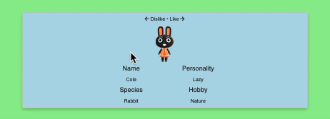

library(googlesheets4)
gs4_deauth()
raw <- read_sheet(
ss = "1kMbmav6XvYqnTO202deyZQh37JeWtTK4ThIXdxGmEbs",
col_types = "Tcc" # datetime, char, char
)✔ Reading from "acnh-swipe_results".✔ Range 'Sheet1'.
I once wrote an R Shiny app to run a popularity contest for Animal Crossing villagers. Surprise: cute ones are favourites.
A while back I wrote a Shiny app (site, source, blogpost) for TidyTuesday to replicate a Tinder-like experience using villagers from Nintendo’s Animal Crossing New Horizons game. It uses the swipe mechanic from Nick Strayer’s {shinysense} package to gauge popularity: left for a ‘dislike’, right for a ‘like’.
After exceeding 3000 total swipes, it’s time to take a look at the results.
Note
I re-rendered this post in July 2023 when there were about 6000 swipes(!).
Data from each swipe in the app is automatically appended to a public Google Sheets sheet that can be read with {googlesheets4}. Public sheets don’t require authentication to download, so run gs4_deauth() before read_sheet() to prevent it.
library(googlesheets4)
gs4_deauth()
raw <- read_sheet(
ss = "1kMbmav6XvYqnTO202deyZQh37JeWtTK4ThIXdxGmEbs",
col_types = "Tcc" # datetime, char, char
)✔ Reading from "acnh-swipe_results".✔ Range 'Sheet1'.First thing is to isolate the left and right swipes only. The {shinysense} package also allows for up and down swipes by default and I wasn’t sure how to remove this capability from my app (and was too lazy to work it out).
dat <- raw[raw$swipe %in% c("left", "right"), ]
dat[sample(rownames(dat), 5), ] # random sample# A tibble: 5 × 3
date name swipe
<dttm> <chr> <chr>
1 2021-12-01 01:09:52 Wart Jr. left
2 2022-12-03 00:41:01 Dora left
3 2022-01-09 22:38:01 Pango left
4 2021-05-14 22:58:52 Bertha right
5 2022-12-03 00:41:42 Rosie left The data are one row per swipe, with columns for date (datetime of when the swipe happened), name (the villager’s name) and swipe (the swipe direction).
But what we’re really after is a grouped table with a row per villager, plus new columns for the total number of swipes, the difference between right and left swipes and the percentage of swipes that were to the right (pc_right). These will let us better rank the characters.
df <- with(dat, table(name, swipe)) |> # like dplyr::count()
as.data.frame(responseName = "n") |>
reshape( # like tidyr::pivot_*()
v.names = "n", # values_from
idvar = "name", # id_cols
timevar = "swipe", # names_from
direction = "wide", # i.e. pivot_wider()
sep = "_" # names_sep
) |>
transform( # like dplyr::mutate()
total = n_left + n_right,
diff = n_right - n_left,
pc_right = 100 * round(n_right / (n_right + n_left), 2)
)
head(df) name n_left n_right total diff pc_right
1 Admiral 14 4 18 -10 22
2 Agent S 10 4 14 -6 29
3 Agnes 14 8 22 -6 36
4 Al 13 3 16 -10 19
5 Alfonso 6 7 13 1 54
6 Alice 8 8 16 0 50I think most readers of this blog are probably {tidyverse} users, so I’ll explain some of the base R approach I took here:
|>) introduced in R v4.1 to chain the functions, which is analogous to {magrittr}’s pipe (%>%) in this examplewith() allows the bare column names in table() to be evaluated as columns of dat, which means you only write the name of the data object oncetable() coerced with as.data.frame() is equivalent to dplyr::count(), basicallyreshape() can be used like tidyr::pivot_wider() (I’ve added comments in the code block above to show how the arguments are used)transform() can be used like dplyr::mutate() to create new columns, thought the help files say it should only be used for interactive and that ‘you deserve whatever you get!’We can also bring in some additional villager data collected for TidyTuesday and join it to the swipe data. This will come in useful later.
tt <- read.csv(
paste0(
"https://raw.githubusercontent.com/rfordatascience/tidytuesday/",
"2e9bd5a67e09b14d01f616b00f7f7e0931515d24/data/",
"2020/2020-05-05/villagers.csv"
)
)
df <- merge(df, tt, by = "name")There are 391 villagers represented in these data, with a combined total of 5950 legitimate swipes.
The total swipes per villager ranged from 7 to 29, with a mean of 15.2±3.9, so some characters didn’t really get enough swipes for proper assessment. You’d better go to the app and add some more swipes, eh?
par(bg = "lightgreen")
hist(
df$total,
main = "Distribution of total swipes per villager",
xlab = "Total swipes",
col = "lightblue",
las = 1
)What if we look now at right swipes (i.e. ‘likes’), adjusted for the total swipes per character?
par(bg = "lightgreen")
hist(
df$pc_right,
main = "Distribution of right swipes per villager",
xlab = "Right swipes (%)",
col = "lightblue",
las = 1
)You can see that the distribution isn’t quite normal. The frequency of swipes below 50% is 297 and above 50% is 83. This implies that the majority of characters were disliked in a binary sense.
The bins at 0 and 100% tell you that there were some characters that were met with universal disapproval and approval, while the bin at 50% tells us that same characters split people’s opinions. Which were they?
So, onto the villager rankings.
I’ve written a little function to output an HTML table where each character’s name links to their profile on the Animal Crossing Wiki and exposes their photo from VillagerDB.
entable <- function(df) {
df$url <- paste0(
"<img src='", df$url, "' ",
"width=50 ",
"alt='Animal Crossing villager ", df$name,"'>"
)
df$name <- paste0(
"<a href='https://animalcrossing.fandom.com/wiki/",
df$name, "'>", df$name, "</a>"
)
df <- df[, c("name", "url", "pc_right", "total")]
names(df) <- c("Name", "Picture", "Right swipes (%)", "Total swipes")
rownames(df) <- NULL
knitr::kable(df)
}To build tension, we’ll start with the least-liked villagers.
bot <- df[order(df$pc_right, -df$n_left), ] |> head()
entable(bot)Sorry Pinky. You are simply… too pink? Seems harsh.
To build even more tension, let’s look at the characters who had a 50:50 ratio of likes to dislikes.
meh <- subset(df[order(-df$total), ], diff == 0) |> head()
entable(meh)I’m not sure why these villagers are so controversial Perhaps they’re too ‘plain’ for some people?
And finally, what you’ve all been waiting for.
top <- df[order(-df$pc_right, -df$n_right), ] |> head()
entable(top)So: Kiki, the grandad-jumper-wearing black-void cat, has the best ratio of right to left-swipes! The rest of the list are pretty conventionally cute (though Zell looks pretty aloof).
I know what you’re thinking: the results are on a villager-by-villager basis, but which species are the most popular? We can aggregate swipes and take a look.
sp_l <- aggregate(n_left ~ species, sum, data = df)
sp_r <- aggregate(n_right ~ species, sum, data = df)
sp_n <- with(df, table(species)) |>
as.data.frame(responseName = "n_villagers")
sp <- sp_n |>
merge(sp_l, by = "species") |>
merge(sp_r, by = "species") |>
transform(
total = n_right + n_left,
pc_right = 100 * round(n_right / (n_right + n_left), 2)
)A couple more base functions here for those not used to them:
aggregate() is like dplyr::group_by() followed by dplyr::summarise() and it allows for compact ‘formula syntax’, so we can say ‘aggregate y by x’ with y ~ xmerge() is just like the dplyr::*_join() familySo, firstly, the species ranked by lowest proportion of right swipes.
sp_bot <- sp[order(sp$pc_right, -sp$n_left), ]
rownames(sp_bot) <- NULL
head(sp_bot) species n_villagers n_left n_right total pc_right
1 mouse 15 172 24 196 12
2 hippo 7 86 19 105 18
3 monkey 8 110 26 136 19
4 kangaroo 8 114 29 143 20
5 pig 15 178 46 224 21
6 bear 15 172 47 219 21I can see how monkeys and hippos might not be that ‘cute’, per se, but what about the mice? Although ‘cute’ is probably not the best term for the cranky mouse Limberg (sorry Limberg).
What about the most liked species?
sp_top <- sp[order(-sp$pc_right, sp$n_right), ]
rownames(sp_top) <- NULL
head(sp_top) species n_villagers n_left n_right total pc_right
1 deer 10 85 96 181 53
2 dog 16 104 115 219 53
3 octopus 3 22 24 46 52
4 cat 23 190 191 381 50
5 ostrich 10 79 72 151 48
6 cub 16 133 104 237 44Deer (all-around solid designs) and dogs (generally friend-shaped) top the table.
Octopuses are up there too, although there’s relatively few octopus villagers. Personally, I like Zucker, an octopus who looks like takoyaki and therefore delicious.
This wasn’t meant to be about villager tastiness, was it? We may need a new app to rank by apparent edibility…
Last rendered: 2023-07-17 18:18:03 BSTR version 4.3.1 (2023-06-16)
Platform: aarch64-apple-darwin20 (64-bit)
Running under: macOS Ventura 13.2.1
Matrix products: default
BLAS: /Library/Frameworks/R.framework/Versions/4.3-arm64/Resources/lib/libRblas.0.dylib
LAPACK: /Library/Frameworks/R.framework/Versions/4.3-arm64/Resources/lib/libRlapack.dylib; LAPACK version 3.11.0
locale:
[1] en_US.UTF-8/en_US.UTF-8/en_US.UTF-8/C/en_US.UTF-8/en_US.UTF-8
time zone: Europe/London
tzcode source: internal
attached base packages:
[1] stats graphics grDevices utils datasets methods base
other attached packages:
[1] googlesheets4_1.1.1
loaded via a namespace (and not attached):
[1] vctrs_0.6.3 httr_1.4.6 cli_3.6.1 knitr_1.43.1
[5] rlang_1.1.1 xfun_0.39 purrr_1.0.1 generics_0.1.3
[9] jsonlite_1.8.7 glue_1.6.2 gargle_1.5.1 htmltools_0.5.5
[13] fansi_1.0.4 rmarkdown_2.23 cellranger_1.1.0 evaluate_0.21
[17] tibble_3.2.1 fontawesome_0.5.1 fastmap_1.1.1 yaml_2.3.7
[21] lifecycle_1.0.3 compiler_4.3.1 dplyr_1.1.2 fs_1.6.2
[25] pkgconfig_2.0.3 htmlwidgets_1.6.2 rstudioapi_0.15.0 digest_0.6.31
[29] R6_2.5.1 tidyselect_1.2.0 utf8_1.2.3 curl_5.0.1
[33] pillar_1.9.0 magrittr_2.0.3 tools_4.3.1 googledrive_2.1.1